Web and Social Network Analytics
Week 4: Unsupervised Learning Techniques
![]()
Feb-2025
Table of Contents
Introduction
Introduction
- Predictive Analytics:
- All about the dependent variables
- What if there is no dependent variable?
- Sales purchases
- Reviews without a score
- Website paths
- …
- General idea:
- Putting similar items into a group
- Finding features
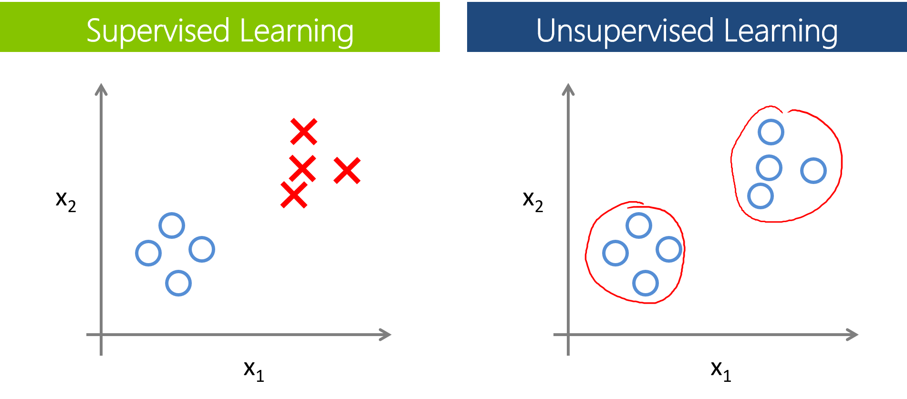
Clustering
Basic Idea
- Group instances that are similar
- Based on the distance between instances:
- Every instance is a point in an n-dimensional space.
- Euclidean distance: \[ d(\textbf{a}, \textbf{b}) = \sqrt{\sum_{i=1}^n (a_i - b_i)^2} \]
- Manhattan distance: \[ d(\textbf{a}, \textbf{b}) = \|\textbf{a} - \textbf{b}\|_1 = \sum_{i=1}^n \|a_i - b_i\| \]

- Common Approaches:
- Connectivity-based clustering (hierarchical clustering).
- Centroid-based clustering: e.g., K-means, K-median.
- Distribution-based clustering: e.g., Gaussian Mixture Model.
- Density-based clustering: e.g., DBSCAN (Density-Based Spatial Clustering of Applications with Noise).
Connectivity-based: Hierarchical Clustering
- Process:
- Start with every point in its own cluster.
- Combine the two closest clusters.
- Repeat until a stopping condition is met:
- Desired number of clusters is reached.
- Minimum similarity threshold (clusters are far enough apart).
- Repeat until a stopping condition is met:
- Dendrogram:
- A dendrogram is a diagram that shows the hierarchical relationship between objects.
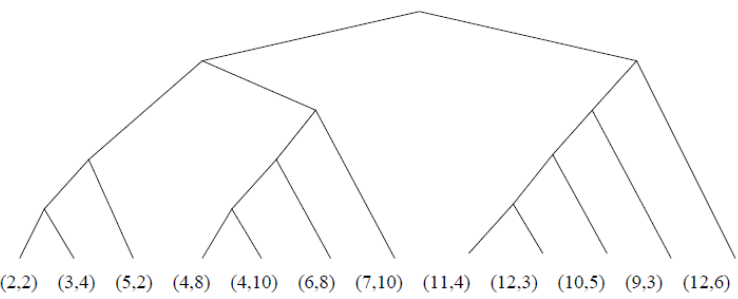
Hierarchical Structure
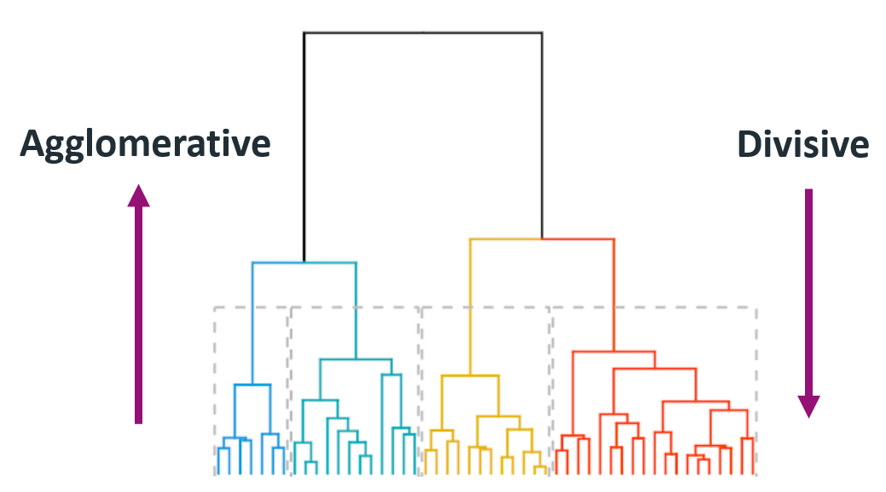
Challenges
- Hard to choose merge/split points:
- Merging/splitting is irreversible.
- Decisions are critical and affect final clusters.
- Time Complexity:
- \(\textbf{O}(n^2)\), making it computationally expensive.
- Large Dataset Issues:
- Difficult to determine the correct number of clusters.
Centroid-based: K-means
- Initialization:
- Choose K different points that are likely in different clusters.
- Make these points the centroids (center of the cluster).

- Repeat Until Convergence:
- Assign points to the closest centroid.
- Adjust the centroid.
- Stop when no further changes occur in assignments and centroids.
Example
Pros and Cons
- Pros:
- Relatively efficient: \(\textbf{O}\)(tknm), \(n\): number of objects, \(k\): number of clusters, \(t\): number of iterations, \(m\): dimension of data, \(k, t \leq n\).
- Cons:
- Often terminates at a local optimum.
- Applicable only when mean is defined.
- Categorical data? Use mode instead of mean (mode = most frequent item(s)).
- Requires pre-specifying the number of clusters.
- Unable to handle noisy data and outliers.
- Outlier: objects with extremely large values.
- May substantially distort the distribution of the data.
- Curse of Dimensionality:
- High-dimensional spaces are very sparse.
Distribution-based: Gaussian Mixture Model
- Gaussian Mixture Model (GMM):
- Assume k Gaussian components.
- Estimate the parameters of Gaussian distributions (e.g., using Expectation-Maximization (EM) algorithm).
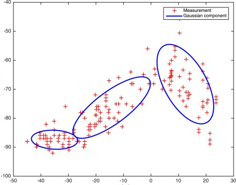
Pros and Cons
- Pros:
- GMM can capture correlation and dependence between attributes.
- Cons:
- Strong assumptions, requires Gaussian distribution.
- Need to specify the number of Gaussian components.
- Advanced (Non-Parametric) Models: Dirichlet Process Mixture Model:
- No distribution assumption.
- No need to specify the number of components.
- For details, refer to this video.
Density-Based Clustering: DBSCAN
- Group points that are close:
- A distance measure is required (e.g., Euclidean distance is commonly used).
- Basic Procedure:
- Take a random point.
- Find all surrounding points within a certain distance (minimum distance is a parameter \(\varepsilon\)).
- Continue until all points within \(\varepsilon\) distance of points within the cluster are found (setting a minimum number of points to be a cluster, minPoints).
- Take a new random point until all points are classified.
- Leftover points are outliers.
- Example: DBSCAN Visualization
DBSCAN: Pros and Cons
- Pros:
- No need to pre-define the number of clusters.
- Can identify clusters of any shape, e.g., circle-based (non-linear) relationships.
- Robust to outliers.
- Cons:
- Different clusters may have very different densities.
- Clusters may exist in hierarchies.
- Still dependent on the chosen distance measure.
- Curse of dimensionality remains an issue.
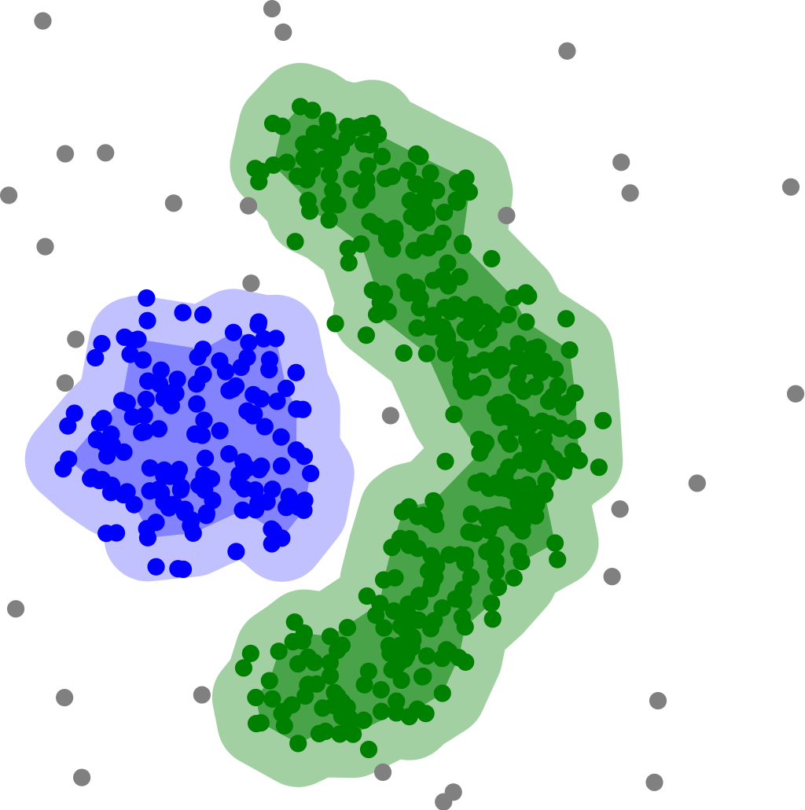
Frequent Itemset Analysis
Frequent Itemset
- What items occur together frequently?
- Examples:
- Beer, pizza, diapers (hoax).
- Golden iPhones and shiny cases (or transparent ones?).
- Formally:
- Set of items: \(I = \{beer, pizza, diapers\}\).
- Rule: \(\{beer, pizza\} \rightarrow \{diapers\}\).
- Became famous because of market basket analysis.
- Examples:
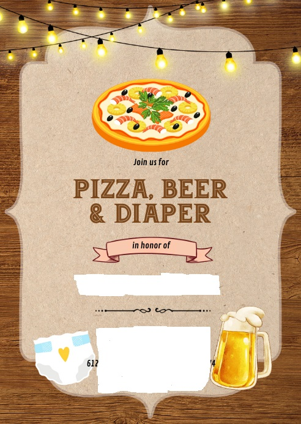
Example
- Example: We have 4 Baskets 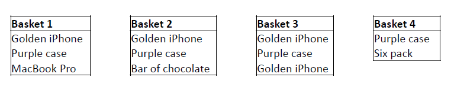
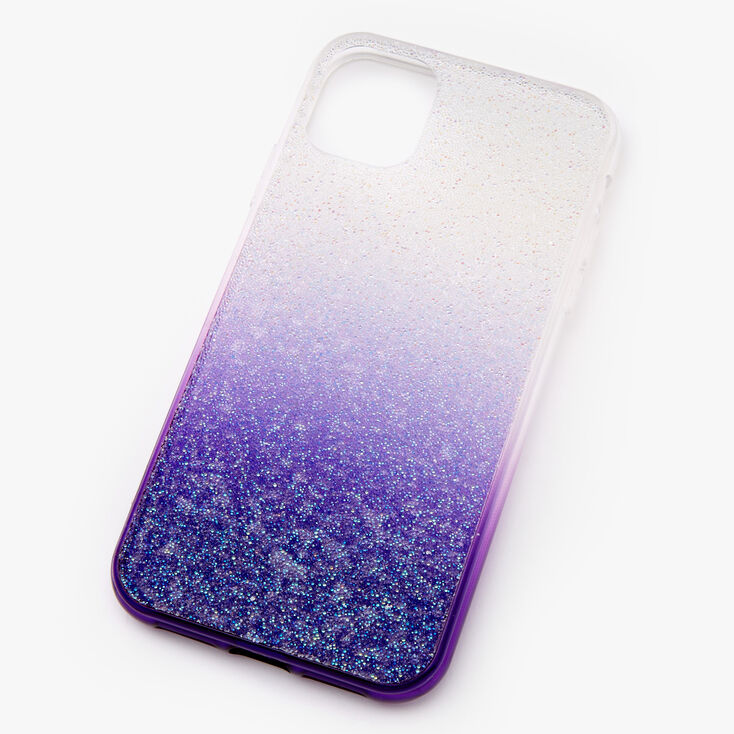
Finding Association Rules
- Association Rules:
- Defined through an antecedent and consequent.
- Both are subsets of \(I\).
- Antecedent implies the consequent.
- Example: Beer \(\rightarrow\) Diapers.
- Calculated over transactions \(T\).
- Represented as baskets.
- Measuring Their Impact: Support, Confidence, Lift
- Defined through an antecedent and consequent.
Measuring Impact: Support
Support: The number of times \(A\) appears among the transactions. \[ sup(A) = \frac{|\{A \subseteq t | t \in T\}|}{|T|} \]
Example: Calculate the support of Golden iPhone.
Support: The number of times \(A\) appears among the transactions. \[ sup(A) = \frac{|\{A \subseteq t | t \in T\}|}{|T|} \]
Example: Calculate the support of Golden iPhone.
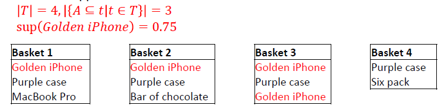
Measuring Impact: Confidence
Confidence: The number of times both itemsets occur together given the occurrence of \(A\). \[ conf(A \rightarrow B) = \frac{sup(A \cap B)}{sup(A)} \]
Example: Calculate the confidence of Golden iPhone \(\rightarrow\) Purple Case.
Confidence: The number of times both itemsets occur together given the occurrence of \(A\). \[ conf(A \rightarrow B) = \frac{sup(A \cap B)}{sup(A)} \]
Example: Calculate the confidence of Golden iPhone \(\rightarrow\) Purple Case.
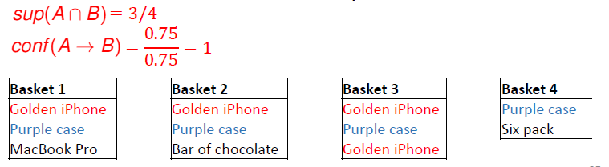
Measuring Impact: Lift
Lift: The support for both itemsets occurring together given they are independent. \[ lift(A \rightarrow B) = \frac{sup(A \cap B)}{sup(A) \times sup(B)} \]
Example: Calculate the lift of Golden iPhone \(\rightarrow\) Purple Case.
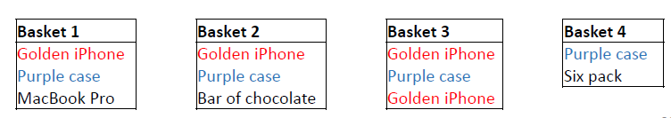
Lift: The support for both itemsets occurring together given they are independent. \[ lift(A \rightarrow B) = \frac{sup(A \cap B)}{sup(A) \times sup(B)} \]
Example: Calculate the lift of Golden iPhone \(\rightarrow\) Purple Case.
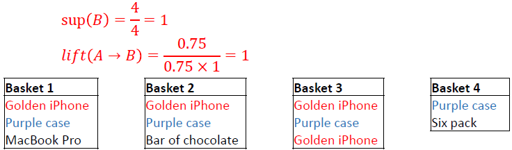
Lift value: example 1
\[ lift(A \rightarrow B) = \frac{sup(A \cap B)}{sup(A) \times sup(B)} \]
- Interpretation:
- If lift > 1: Indicates both items are dependent on each other.
- If lift = 1: Indicates both items are independent.
- If lift < 1: Items are substitutes for each other.
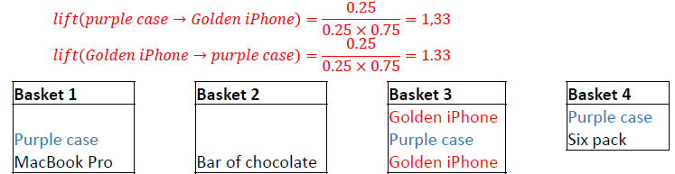
Lift value: example 2
\[ lift(A \rightarrow B) = \frac{sup(A \cap B)}{sup(A) \times sup(B)} \]
- Interpretation:
- If lift > 1: Indicates both items are dependent on each other.
- If lift = 1: Indicates both items are independent.
- If lift < 1: Items are substitutes for each other.
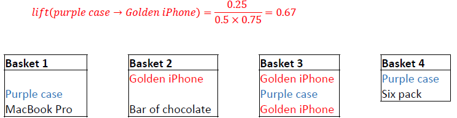
A-Priori Algorithm
- Finding Association Rules: A-Priori Algorithm:
- Finds all relevant rules by relying on support (and confidence).
- Rationale:
- Candidate Generation:
- Find support of all itemsets of size X (starting with X = 1).
- Retain all itemsets that meet the minimum support level (minSup).
- Repeat for size X+1 until: No more itemsets meet the criteria, or X = |I| (size of the entire itemset).
- Candidate Generation:
- Set Theory Insight:
- The support of composed itemsets is always less than or equal to that of their components.
A-Priori Algorithm: Example
- A-Priori Algorithm Example (minSup 50%): 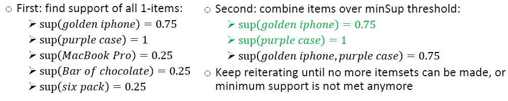
A-Priori Algorithm: Exercise
- Use the A-Priori Algorithm to find the frequent itemsets in the given transaction list.
- Minimum Support (minSup) = 60%.
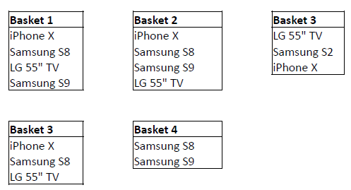
A-Priori Algorithm: Solution
- Minimum Support (minSup) = 60%.
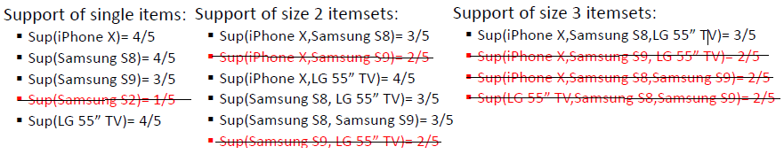
Recommendation Systems
Recommendation Systems
- Finding similar items to what people like:
- Based on previous searches/purchases of others:
- Collaborative filtering-based recommendation systems.
- Based on items similar to the main interests of the user/buyer:
- Content-based recommendation systems.
- Based on previous searches/purchases of others:
- Examples:
- “Frequently bought together” on Amazon.
- “Product related to this item” on virtually every webshop.
Example
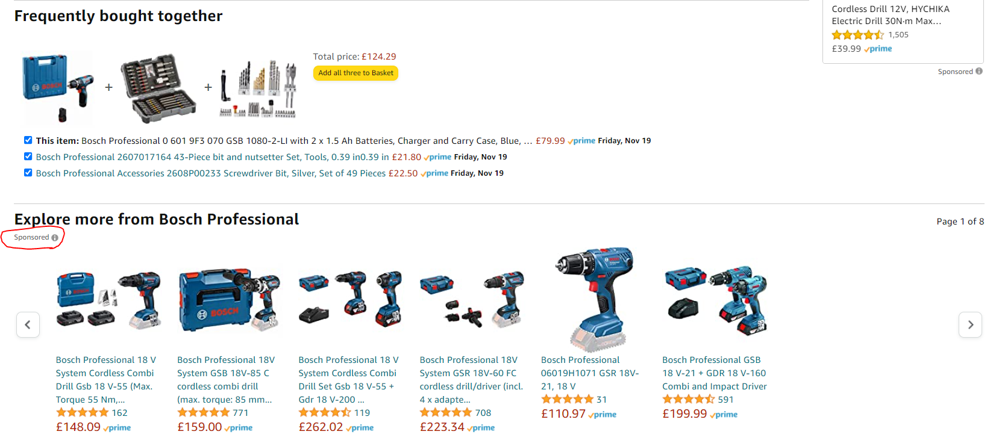
Basics
Every item needs to be profiled:
- The characteristics need to be captured in features.
- Example: Chocolate is sweet and brown; Beer is bitter and can be brown, yellow, or red.
Some items are harder to analyze: picture, video, document, Tags can be used.
Types of Recommendation Systems:
- Collaborative Filtering (Unsupervised):
- Input: Ratings from users in \(U\) of items in \(I\) (or vice versa).
- Output: Find similar users in \(U\), apply their ratings/interests to items in \(I\) (or vice versa).
- Content-Based Filtering (Supervised):
- Input: Ratings of \(U\) for \(I\).
- Output: Generate a classifier that applies users’ characteristics and ratings to \(I\) for a new user.
- Collaborative Filtering (Unsupervised):
Representation: Utility Matrix
- Utility Matrix: Describes the relationship between users and items.
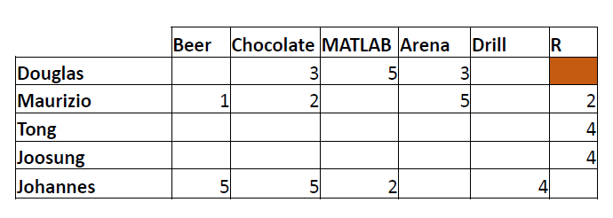
Question: Does Douglas like R?
Collaborative Filtering
- Collaborative Filtering:
- Connecting users through similarity in items: User-to-user.
- Connecting items through similarity in users: - Item-to-item.
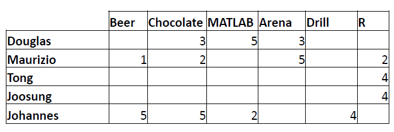
Similarity Measures
- Jaccard Similarity (co-occurrence-based): \[ J(X, Y) = \frac{|X \cap Y|}{|X \cup Y|} \]
- Cosine Similarity (vector-based): \[ cos(\theta) = \frac{X \cdot Y}{\|X\| \|Y\|} = \frac{\sum_{i=1}^n x_i y_i}{\sqrt{\sum_{i=1}^n x_i^2}\sqrt{\sum_{i=1}^n y_i^2}} \]
- Pearson Correlation (not commonly used): \[ r_{X Y}=\frac{n \sum x_{i} y_{i}-\sum x_{i} \sum y_{i}}{\sqrt{n \sum x_{i}^{2}-\left(\sum x_{i}\right)^{2}} \sqrt{n \sum y_{i}^{2}-\left(\sum y_{i}\right)^{2}}} \]
Similarity Measures: Example
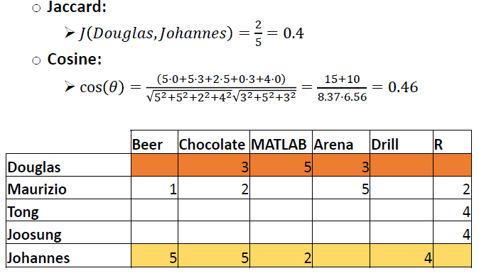
Similarity Measures: Exercise
Question:
- Find the similarity between Douglas and Maurizio.
- Find the similarity between Johannes and Maurizio.
- What product(s) would you recommend Maurizio?
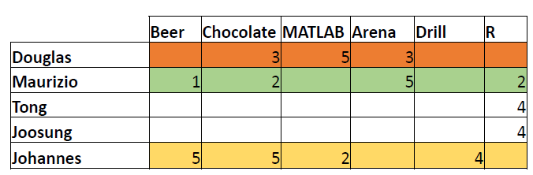
Similarity Measures: Q1 Solution
Q1: Find similarity between Douglas and Maurizio.
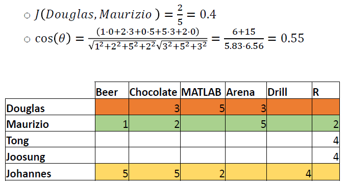
Similarity Measures: Q2 Solution
Q2: Find similarity between Johannes and Maurizio.
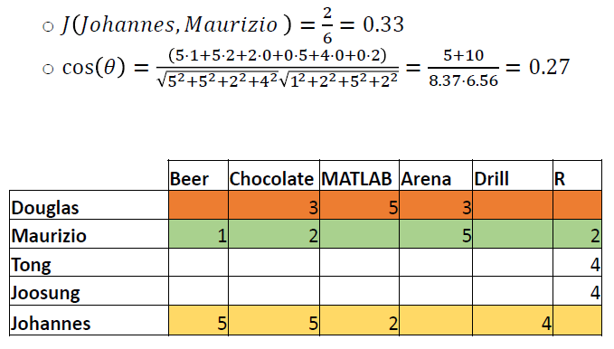
Similarity Measures: Q3 Solution
Question 3: What product(s) would you recommend Maurizio?
- Recommendation Based on Similarity:
- Highest similarity with Douglas.
- Not previously acquired products that Douglas likes: MATLAB.
:::
Similarity Measures: Q3+
Question 3+: What product(s) would you recommend Maurizio now?
- Highest similarity with Douglas and Tong.
- Average rank of MATLAB:
- For Douglas: Last 1 over 3 items; For Tong: Top 3 over 5 items.
- Average ranking: Less than the middle.
- Conclusion: No recommendation.
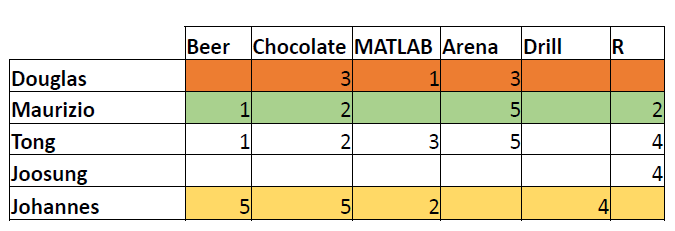
Other Actions: Cut-off
Other actions to improve results:
- Rounding, for example, cut-off at 3.
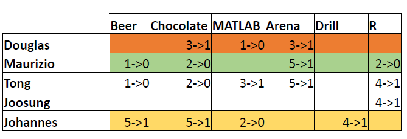
Other Actions: Cut-off
Other actions to improve results:
- Rounding, for example, cut-off at 3.
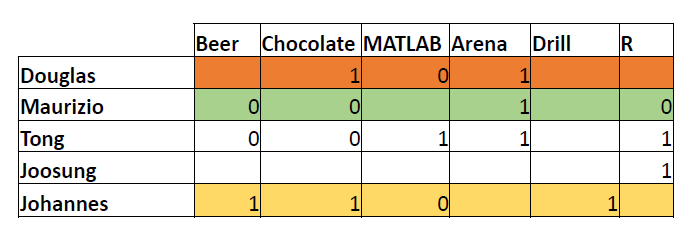
Other Actions: Normalisation
Other actions to improve results:
- Subtract average of users’ rating from all ratings
- Turn low ranks into negative numbers and vice versa
- Bigger difference in similarity scores
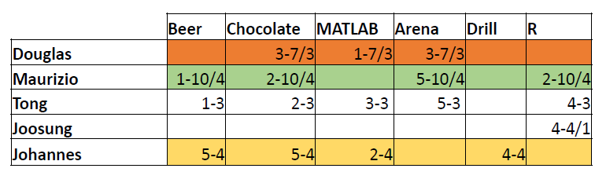
Other Approaches
- Collaborative Filtering Alternatives:
- Other approaches:
- Cluster groups.
- Find people in social networks with similar interests.
- Relationships indicate relatedness.
- Note that collaborative filtering is already a form of this.
- Other approaches:
Take Home Messages
Unsupervised Learning Tools in Social Network Analysis
- Clustering
- Frequent Itemset Analysis
- Recommendation Systems